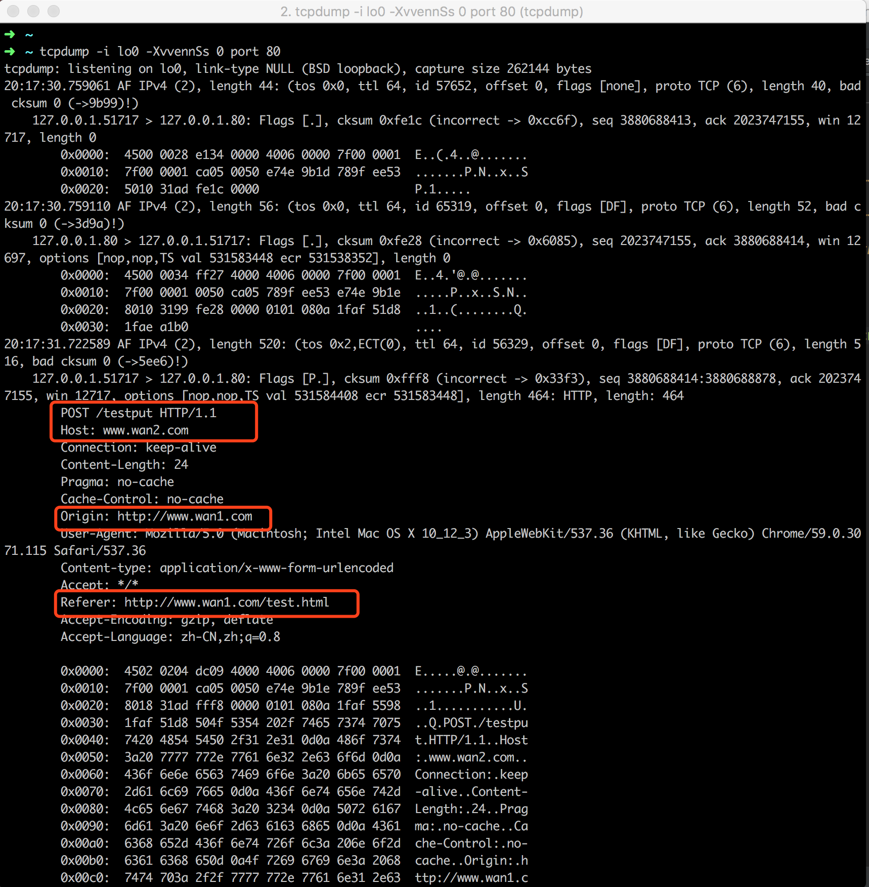
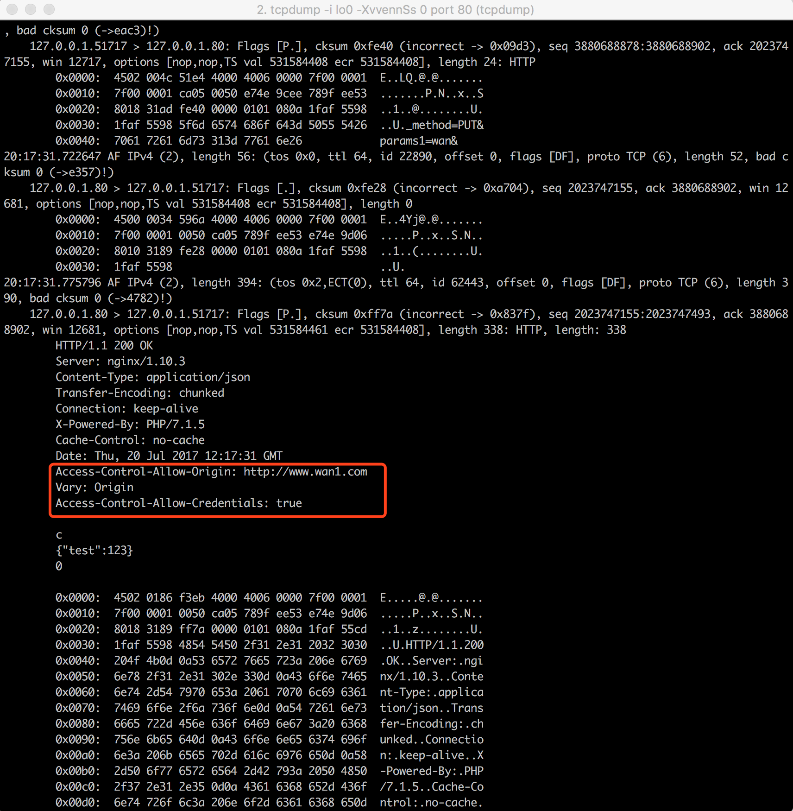
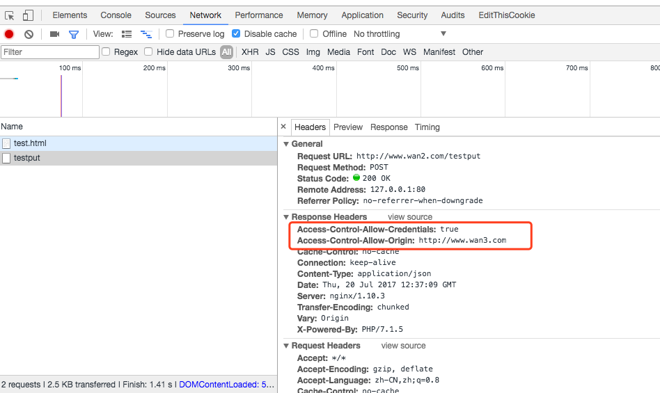
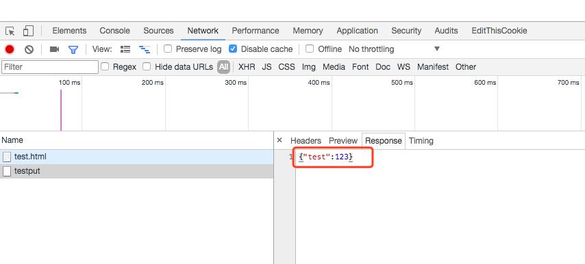
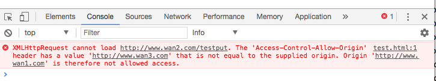
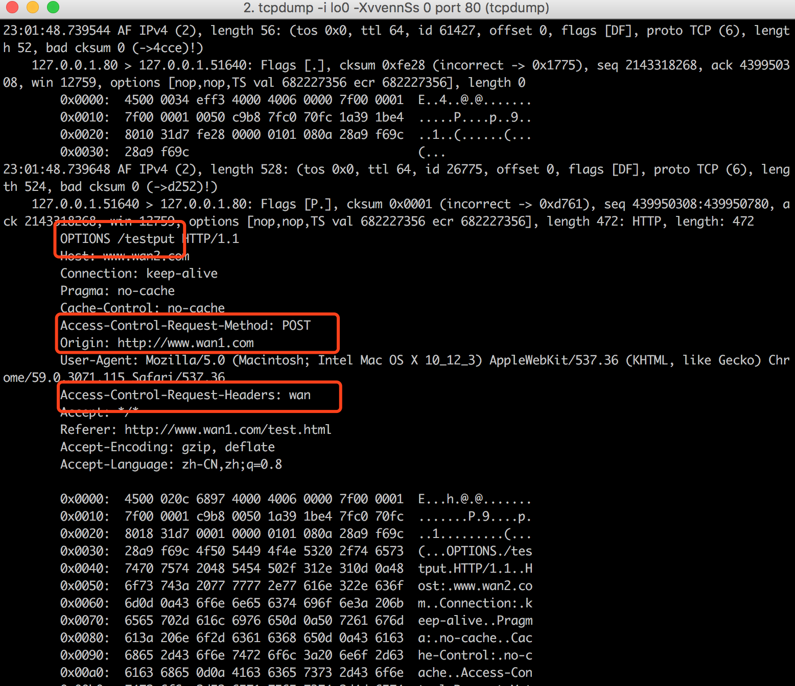
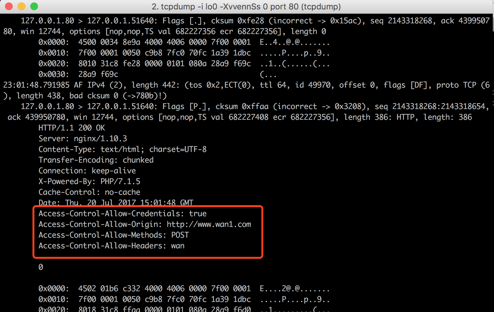
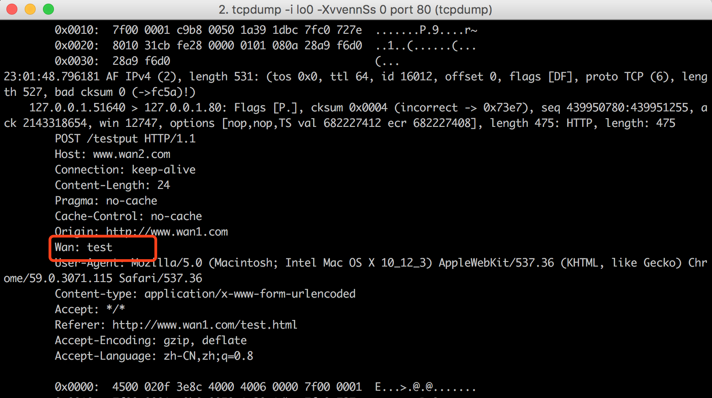
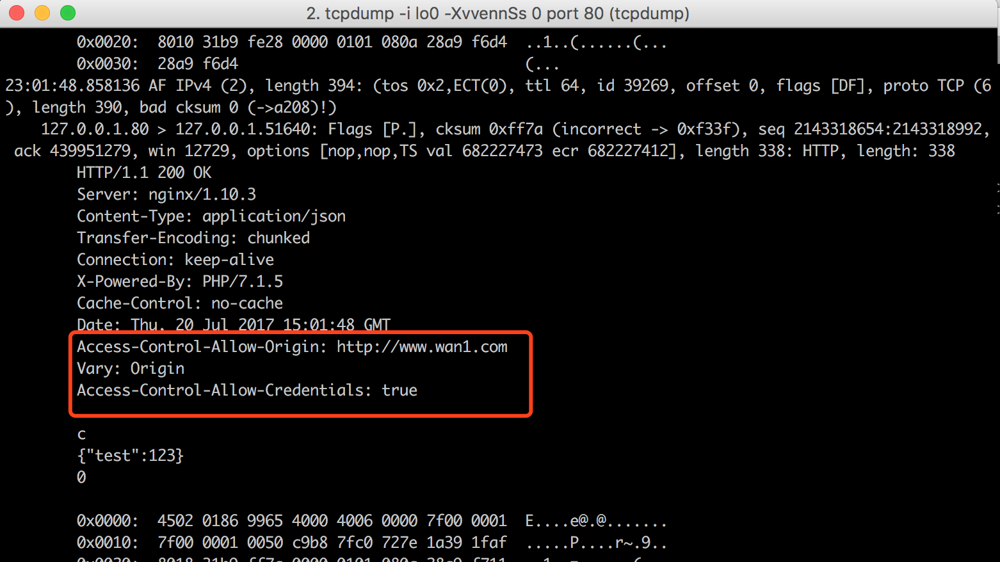

跨域请求
整理原因
因为做服务端开发，一直对跨域请求只是了解的地步，今天刚好前端有一个问题，找到我，确定问题的时候，走了一些弯路，最后确认问题出在跨域请求上，所以感觉自己对跨域只是了解，而没有进行过整理，所以这里对跨域请求的一些知识进行一些整理
什么算作跨域
跨域，指浏览器不能执行其他网站的脚本，他是由浏览器同源策略造成的，是浏览器对JavaScript施加的安全限制
所谓同源是指，域名，协议，端口均相同，举个例子（"源"请求"目标"）
| 源 | 目标 | 说明 |
|---|---|---|
| http://www.a.com/a.html | http://www.a.com/b.php | 非跨域 |
| http://www.a.com/a.html | http://www.a.com/api/b.php | 非跨域 |
| http://www.a.com/a.html | http://www.b.com/b.php | 跨域，主域名不同：a/b |
| http://www.a.com/a.html | http://api.a.com/b.php | 跨域，子域名不同：www/api |
| http://www.a.com/a.html | http://www.a.com:8080/b.php | 跨域，端口号不同：80/8080 |
| http://www.a.com/a.html | https://www.a.com/b.php | 跨域，协议不同：http/https |
跨域解决方法
网上解决方案说法很多，没有一一验证，我比较熟悉的两种方法
JSONP
原理：JSONP利用了<script>标签可以链接到不同源的JS脚本，来达到跨域请求目的，详细参考传送门
缺点：
1. 只能GET请求；
2. 因为使用\<script\>标签加载JS脚本，所以受浏览器加载JS源线程数量限制
3. 因为JSONP属于脚本注入行为，存在安全隐患
4. 需要服务端配合，导致服务端接口无法做成通用接口
...（还有其他缺点，未验证）
CORS
原理：CORS(Cross-Origin Resource Sharing)定义了在跨域访问资源时浏览器和服务器之间如何通信。简单点说就是浏览器与服务器之间的一种协议，使用http头部信息让浏览器与服务器互相了解，从而决定请求与响应成功与否（需浏览器支持，也基本都支持～）
下面主要介绍CORS原理
CORS知识整理
CORS大致流程图
JavaScript->浏览器: xhr.send();
浏览器->服务器: 预先请求（如果需要）
服务器-->浏览器: 预先回应（如果需要）
浏览器->服务器: 实际请求
服务器-->浏览器: 实际回应
浏览器-->JavaScript: 触发onload或者onerror
CORS分类
CORS可以分为两种：
- 简单请求
- 复杂请求
一个简单请求大致如下：
- HTTP方法是下列之一
* HEAD
* GET
* POST
- HTTP头包含
* Accept
* Accept-Language
* Content-Language
* Last-Event-ID
* Content-Type (但仅能是下列之一）
** application/x-www-form-urlencoded
** multipart/form-data
** text/plain
任何一个不满足上述要求的请求，即被认为是复杂请求。一个复杂请求不仅有包含通信内容的请求，同时也包含预请求（ preflight request )
下面使用tcpdump抓包验证（tcpdump命令大家可以自己百度，我这是抓取内环网络80端口的报文）

本地测试使用www.wan1.com下请求www.wan2.com接口，模拟跨域请求，从请求包中可以看到，Refer为www.wan1.com/test.html，请求host为www.wan2.com，请求接口testput
简单请求的发送从报文上看与普通请求没有太大区别，但是在HTTP header中包含了一个域 Origin 的信息（如第二个红框所示）。不过这一项实际上由浏览器代为发送，并不是开发者代码可以触及到的。
下面是HTTP回应

在回应中，CORS相关的项目全都是以 "Access-Control-"作为前缀的，其意义分别如下：
- Access-Control-Allow-Origin（必含）- 不可省略，否则请求按失败处理。该项控制数据的可见范围，如果希望数据对任何人都可见，可填写“*”。
- Access-Control-Allow-Credentials（可选）- 该项标志着请求当中是否包含cookies信息，只有一个可选值：true（必须为小写）。如果不包含cookies，请略去该项，而不是填写false。这一项与Ajax请求中withCredentials属性应保持一致，即withCredentials为true时该项也为true；withCredentials为false时，省略该项不写。反之，则会导致请求失败。
经测试，如果Access-Control-Allow-Origin服务器下发值为 http://www.wan3.com，那么ajax中是得不到服务器返回的值的，但是在Chrome中开发者模式中Network中会看到请求正常返回，并能看到header中设置的值为http://www.wan3.com。如下图：

请求返回值如下图：

但是在Console会报错，提示权限不允许，如下图：

可以总结简单请求流程如下
JavaScript->浏览器: 简单请求;
浏览器->服务器: 添加Origin
服务器-->浏览器: 拒绝访问或允许访问并返回允许的Origin
浏览器-->JavaScript: 根据Origin触发onload或者onerror
复杂请求
如果仅仅是简单请求，那么即便不用CORS也没有什么大不了，但CORS的复杂请求就令CORS显得更加有用了。简单来说，任何不满足上述简单请求要求的请求，都属于复杂请求。比如说你需要发送PUT、DELETE等HTTP动作，或者发送Content-Type:application/json的内容。
复杂请求表面上看起来和简单请求使用上差不多，但实际上浏览器发送了不止一个请求。其中最先发送的是一种“预请求”，此时作为服务端，也需要返回“预回应”作为响应（即如CORS流程图中所画）。预请求实际上是对服务端的一种权限请求，只有当预请求成功返回，实际请求才开始执行。
使用tcpdump抓包，第一个报文如下：

预请求以OPTIONS请求发送，当中同样包含域，并且还包含了两项CORS特有的内容：
- Access-Control-Request-Method - 该项内容为实际请求的种类，可以是GET，POST之类的简单请求，也可以是PUT，DELETE等等。
- Access-Control-Request-Headers - 该项是一个以逗号分隔的列表，当中是复杂请求所使用的的头部（这里为了制造复杂请求，添加了一个key为wan的header值）
显而易见，这个预请求就是在为之后的实际请求发送一个权限请求，在预回应返回的内容当中，服务器端应当对这两项进行回复，以让浏览器确认请求是否能够成功完成。例如，刚才的预请求获得的服务端如下回应

来看预回应当中的项目：
- Access-Control-Allow-Origin（必含）- 和简单请求一样的，必含的一个域。
- Access-Control-Allow-Methods（必含）- 这是对预请求当中的Access-Control-Request-Method的回复，这一回复将是一个以逗号分隔的列表。尽管客户端或许只请求某一方法，但是服务端仍然可以返回所有方法，以便客户端将其缓存
- Access-Control-Allow-Headers（当预请求中包含Access-Control-Request-Headers时必须含）- 这是对预请求中Access-Control-Request-Headers的回复，和上面一样是以逗号分隔的列表，可以返回所有支持的头部
- Access-Control-Allow-Credentials（可选）- 和简单请求中相同
- Access-Control-Max-Age（可选）– 以秒为单位的缓存时间。预请求的的发送并非免费午餐，允许时应当尽可能缓存。
一旦预回应返回后，所请求的权限都已满足后，则开始发送实际请求

如图所示即为负责请求中允许添加的header。
实际回应如下图

在这里实际回应与简单请求一样。
总结复杂请求过程
JavaScript->浏览器: xhr.send();
浏览器->服务器: 预先请求，验证权限
服务器-->浏览器: 预先回应，权限允许
浏览器->服务器: 实际请求
服务器-->浏览器: 实际回应
浏览器-->JavaScript: 触发onload或者onerror
总结
到目前为止，跨域请求到目前为止理论基础就完了。
今天出现的问题是ajax请求后端接口的时候，无法带上cookie，刚开始以为是cookie下发的domain问题；修改后，发现依然无法带上cookie，后来才发现，原来是跨域请求了。跨域请求默认不带cookie。当js设置withCredentials为true，但是Console里会报错，然后查看服务器设置，服务器Access-Control-Allow-Credentials设置为false，修改服务器设置后，问题才完整解决了。